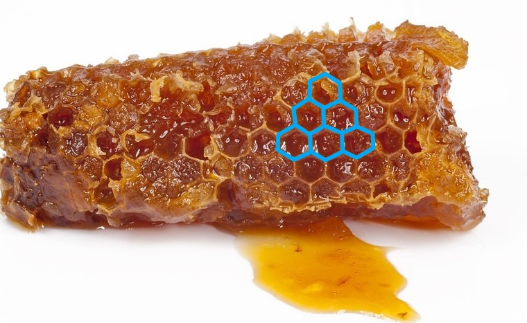
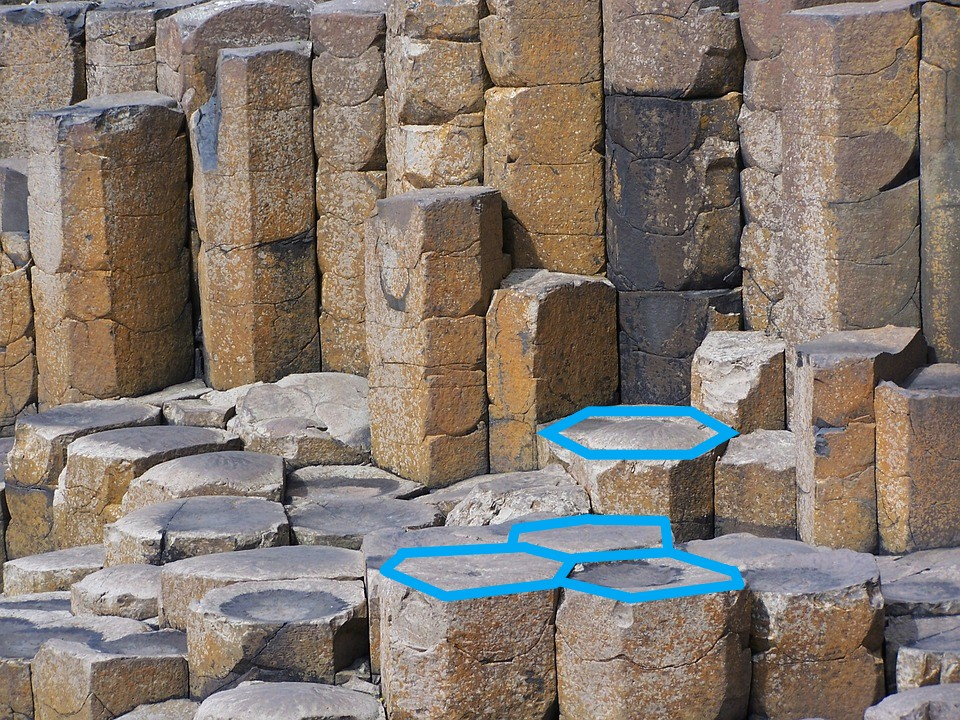

Polygons in nature
„Za każdym razem, kiedy pada śnieg, jego pierwotne elementy niezmiennie mają kształt sześcioramiennej gwiazdki. To musi mieć swoją określoną przyczynę, a jeśli jest przypadkowe, to dlaczego nie spotyka się pięcio– lub siedmioramiennych gwiazdek?“
Johannes Kepler
Traktat o śniegu sześciokątnym (łac. De nive sexangula, 1611)
Nature is amazing and constantly surprises us with its perfection. It has always been an inspiration and inspiration of man, and the shapes it hides are an expression of perfection and create breathtaking images. These shapes, although we often don't realize it, are polygons, often even regular polygons. Nature also has its "favorite" polygons, from which it builds the wonderful world of plants and animals that surround us.
What is a polygon? A polygon is a part of the plane limited by a normal broken line closed with you, a broken segment of this broken line, we call the sides of the polygon, plant the vertices, we call the vertices of the polygon
Triangles
The smallest polygon in terms of the number of vertices is a triangle. According to one of the definitions "The triangle is a plane bounded by a regular broken closed consisting of three sections, along with the broken one. " The number 3 appears here, which embodies the concept of strength and plays a creative role. It can be said that it is a link between two points, without which they could never meet. According to this principle, we get a triangle by joining three non-collinear points.
Types of triangles due to the sides:
- Equilateral
- Isosceles
- Scalene
Types of triangles due to angles:
- Chevron
- Rectangular
- Obtuse
Where will we meet the triangles? Cross-section a melon through the center perpendicular to the lines marked on the skin and you will get perfect triangles in which the seeds are arranged. Look at the cucumber cut into slices - here we also have a tasty triangle.
Many flowers like this shape, e.g. trifle or oxalis. The animal world also uses triangles - even fish fins. And did you know that the beetle always "goes into a triangle"? These insects have 6 legs but always at the same time raise two - the first and third on one side and the middle or the other on the other side. So if you combine the beetle footprints, you'll get triangles.
Quadrangles
A quadrangle is a polygon with four sides. The segment connecting two adjacent vertices of the quadrangle is called the diagonal of the quadrangle. Each quadrangle has two diagonals, and the sum of its internal angles is always 360 °
We have many types of quadrangles, e.g .:
- Deltoids
- Trapezoids
- Parallelograms
- Diamonds
- Rectangles
- Squares
Quadrilaterals occur in inanimate nature, and interestingly among animals.
An example is galena or lead sulfide. It is one of the most common sulphide minerals on Earth. It is lead ore, its name comes from the Latin language. This mineral is formed into shiny, silver cubes, with almost perfect shapes. And the walls of the cubes are squares.
Another example is the eye of a young goat. Their rectangular, horizontal pupils seem to be an absolute quirk. However, it turns out that they are very common and occur, among others deer or antelopes. It's just that these the animals have dark iris, so the pupil is not visible.
Why did nature decide to pupil these animals in this shape? Researchers at University of California and Durham University conducted this study. They looked at 213 terrestrial animal species and found interesting relationship. It turns out that the horizontal , rectangular pupils have animals that are typical predators' victims . However, round or vertical pupils are a specialty of predators. Computer models have shown that a horizontal pupil gives a wider, panoramic field of view which is important for the safety of animals that have been looking for predators all their lives and are always ready to run. In addition, such a pupil limits the amount of light coming from above, thanks to which the animal reduces the risk of being blinded by the sun. And one more feature - beyond panoramic vision - the rectangular pupil also provides very good visual acuity straight ahead, which is important when in fractions of a second you have to run to escape.

Pentagons
A pentagon, also known as a pentagon. This is another of the polygons with the number of sides consistent with the name. Its special form are: convex pentagon and concave star pentagoncalled pentagon.
Occurs in them "golden ratio", this is such a division of the segment into two parts, in which the ratio of the entire section to the greater part is equal to the ratio of the greater part to the smaller one. From ancient times this division was considered to be canon of beauty and artists willingly used it in their works (architects, sculptors, painters and even musicians). Johannes Kepler he thought the two greatest treasures of geometry were Pythagorean theorem and exactly golden section split. The golden ratio is also common in nature, and the gold number (length ratio of parts) is approximately 1,618 . The ratio of the diagonal of a regular pentagon to its side, as well as the radius of the circle described on the pentagon to its side is just a golden number. In nature, which we are certainly not completely aware of, the richness of regular pentagons, especially in the world of flowers.
A regular pentagon is characterized in that:
- Each of its internal angles is 108 °
- The central angle of the circumscribed circle based on the side of the pentagon is 72 °
„Geometria ma dwa wielkie skarby: jednym z nich jest twierdzenie Pitagorasa, a drugim podział odcinka w złoty sposób; pierwszy z nich możemy porównać do złota, a drugi do drogocennego klejnotu.“
Johannes Kepler
slynne-cytaty.pl
Hexagons
A hexagon is also called a hexagon or hexagon It is a polygon with six sides and six internal angles. Sum measure angles in any hexagon is equal to 720 °. A special kind of hexagon is a regular hexagon known to everyone as a honeycomb. This type of polygon occurs mainly in inanimate nature.
The hexagon that probably everyone knows very well is the above-mentioned patch honey. Have you ever wondered why bees "insisted" in this shape? Which caused them not to choose for example Pentagram or maybe a triangle? Do they know the rules of mathematics, physics? Or is it just an accident?
Researchers at the University of Cardiff proved that bees were originally build "Cottages" in shape of oval. When they work in them, the warm wax softens and becomes semi-fluid like tar. The laws of physics, in turn, make oval holes transform into beautiful hexagons. Works here surface tension between the cell walls that pulls and forms the symmetrical shapes of a regular hexagon.
What's more, to build such cells while maintaining the same capacity, bees consume the least material - so they are not only hard-working but also economical. This type of patch in addition to optimal the use of space also ensures its high durability mechanical, which again results from the laws of physics.
The popular honeycomb shape is also found in formations rock formations in different parts of the world. An example is basalt columns at County Antrim in Northern Ireland, known as the Giant Road. According to legend, the stone pillars are not very nice work giant, named Finn MacCool. A giant driving in more poles he wanted to build a solid road leading to those off the coast Scottish Isle of Hebrides. But that's just a legend.
The origin of these rock formations dates back to the Cretaceous period, i.e. around 60 millions of years ago and is also associated with the laws of physics and mathematics operating in the during the melting and solidification of rocks, their shrinkage and cracking.


Polygons, and often their regular forms occur around us, in animate nature, and are also part of the inanimate environment. There always is a specific reason, as it turns out occurrence of a specific shape in nature resulting from the laws of physics and mathematics.
,,Tyle jest w każdym poznaniu nauki, ile jest w nim matematyki"
Immanuel Kant
Summary
| Polygons | ||||
|---|---|---|---|---|
| Name | Number of angles | Number of diagonals | A measure of an internal angle | |
| Triangles | 3 | 0 | 60° | |
| Quadrangles | 4 | 2 | 90° | |
| Pentagons | 5 | 5 | 108° | |
| Hexagons | 6 | 9 | 120° |